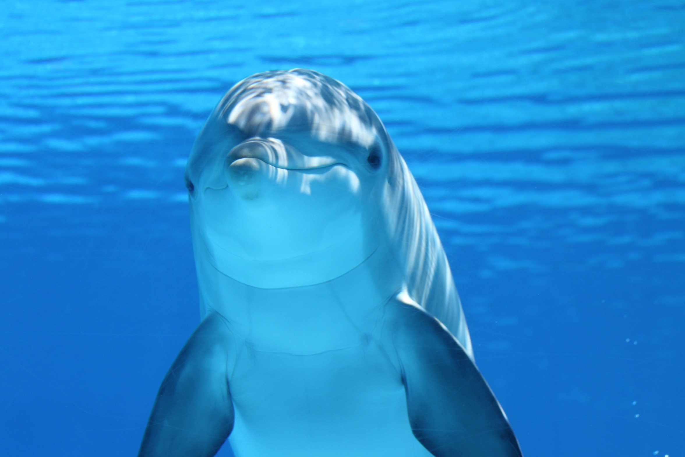

_

A imensidão azul do oceano, ponto turístico universal, que nos leva ao encontro da paz.
Nos liga aos seres mais puros do planeta, vivendo em uma realidade distinta.
Chama a atenção para um ecossistema que cuida do nosso cotidiano, escondido.

Voce sabia que o mar é reponsável pela manutenção de 85% do nosso oxigênio?
Responsável também por dar lar a uma fauna e flora que conhecemos apenas 20%.

A vida nestes locais depende de um clima muito expecífico.
Vivendo em conjunto, aproveitando o melhor que o mar pode oferecer.
Com os predadores certos para manter o equilíbrio da vida

_Estes predadores não somos nós. Somos depredadores.
Escolha o mar como seu ponto turístico favorito,
não como sua lixeira e mercado.
Ainda não é tarde para salvar os Oceanos.
Se interessou pelo assunto? Assista "Seaspiracy: Mar Vermelho" na Netflix.